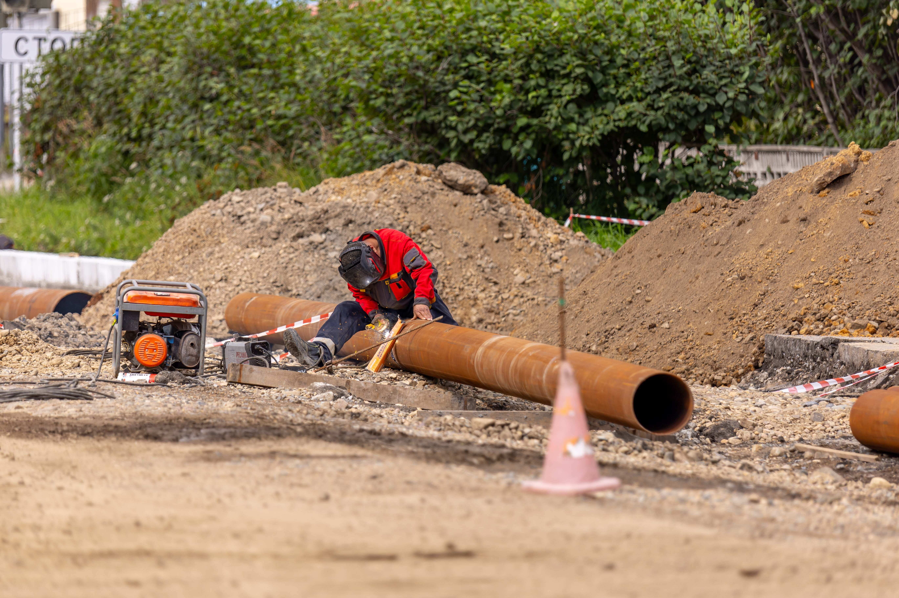
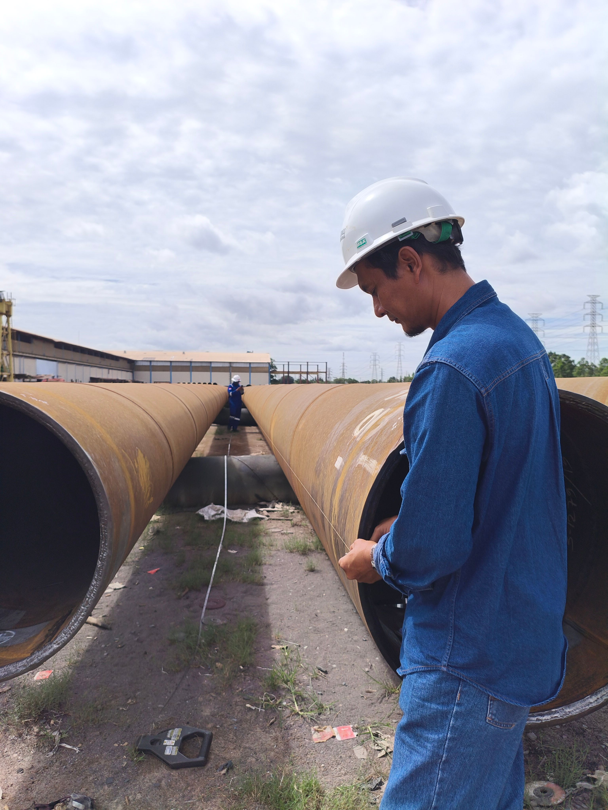
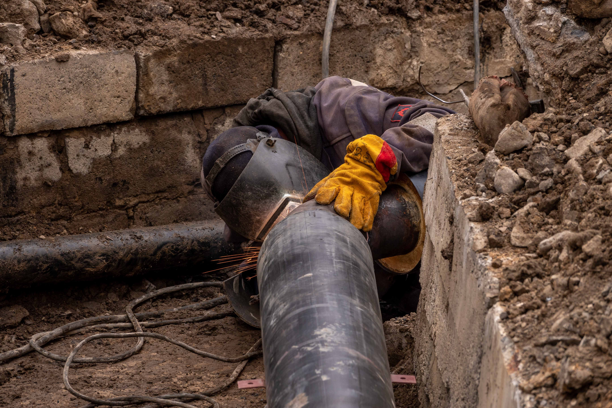

FIELD THEMES
Plans become
progress.
Representative industry photographs give context to the work we support. These licensed stock images are not records of Hari Om project sites.

01 / NETWORKSPipeline fieldworkPhoto by Sergei Starostin · Pexels
02 / FIELDPipeline inspectionPhoto by Asep Fajar Sasmita · Pexels
03 / DELIVERYPipe work in a trenchPhoto by Sergei Starostin · PexelsThese photos are licensed for commercial use through Pexels and shown as representative industry imagery. Send approved Hari Om project photos and captions when you want this gallery to feature your own work.